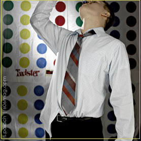

 According to exhaustive Internet research, themed parties work much better than non-themed events. Reference toga parties or masquerade balls, where the ignominy of dressing in strange, fantastic garb somehow brings people together. Alcohol helps, too. So when the theatre troupe Collaboraction presented their Carnaval party – sponsored by sixosix, of course – I found the body-painting and carnival masks made for an interesting evening.Let me clarify: Part of an entire room was dedicated to painting either fully- or semi-naked bodies. Very attractive bodies. Modesty was a foreign concept. Let's do a quick recap. The whole thing made me wish I had grown up in Brazil and knew how to rhumba and samba and such. Fashion shows where a logo that I helped to create sit atop the heads of attractive people is a rare occurrence, one where I can feel two emotions that I don't normally belong together: drunk and proud. |
|
People from all walks of life show up to these sort of events: slick businessmen and men with Morrissey tattoos, women with dreadlocks and women who walk around topless because “my boyfriend said it was a good idea.” I spent the majority of the evening being turned down by men when I asked them for their e-mail addresses, and just plain being turned down by women. But I did learn two important things: One, key-lime-pie Martinis are always a bad idea, and two, how much respect should be given to bartenders and others in industries that routinely deal with drunks. Ever tried to coordinate a few hundred people who have been drinking for hours into a huge game of Twister? When progress is the aim, a collective goal is usually the best path for obtaining it. When the collective goal is art and supporting or promoting art, you have a hell of a better time getting it done. Booze doesn't hurt either. |
|